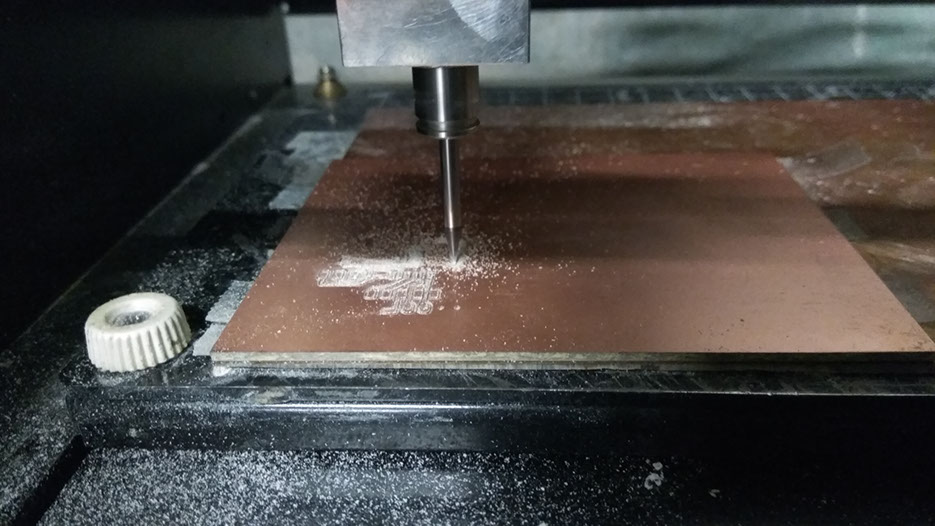
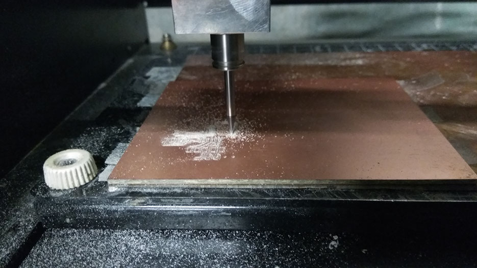

For networking and communication , I decided to go for Half-duplex serial communication between an Input and Output devices. Input device was Distance sensor and Output device was RGB led.
With help from Gautam and Mohit, I designed a Distance sensor board. I had earlier designed a distance sensor board in previous week but could not use it for networking since it did not have Rx/Tx for communication.
The first step was to design the board in Eagle. I took my old board and added Rx,Tx,VCC and GND pins. Over all the board had following components:


 



Next I checked if the board was working individually. For this I tried the following codes


 First step was to put Rx,Tx,VCC and GND in the board developed for Input device.
First step was to put Rx,Tx,VCC and GND in the board developed for Input device.
For output device, I used the board I made in previous week's assignment, which can be found here.
The code for LED was written to blink in different colours responding to input in the form of "0-1-2". However, when the code was run later using networking, it did not work. Then I realised that since we are already providing VCC in common pin, we need to give digitalWrite as "low" for the colour that we want to blink.
Hence, the code was corrected as below.
Next I used an FTDI cable and connected its Rx,Tx,VCC and GND to the input device board and the networking was established.
Next, to add more boards, I decided to add more values from my input device. The idea was to allow more boards to be connected. For this, one option is to call each board by giving different addresses from the computer, and the next option, which I chose, was to allow the input device to call for different boards and also define the colours of RGB led in the first board.
My distance sensor code currently gave me values as 0-1-2. Here, value "0" would light up Red colour on the RGB board, "1" would light up Green and "2" would light up blue. So, again I changed the distance sensor code and increased its range to give an additional value "3". This value will give signal to light up the Led on "hello echo" board. Similarly the code can be modified to give additional values and signals can be given to additional boards as and when required.
Here is how the code looked like

I uploaded the code successfully to obtain 0-1-2-3 as values for different range of distances. I checked it on serial monitor first, before attaching the boards to the other board.
Next step was to write a code for "hell echo" led to light-up when it gets signal "3". Here is how it looked like.

Next step was to write a code for "hello echo" led to light-up when it gets signal "3". Here is how it looked like. The idea was to see the LED light up once you give the value "3" from the computer. Later on when all the boards are connected, this value will come from my input device.
I checked if my code was working individually. It would give me red, green, blue outputs for 0,1,2 respectively. Finally, since all individual codes were uploaded, I connected all 3 boards and FTDI, to check if my connections were working.